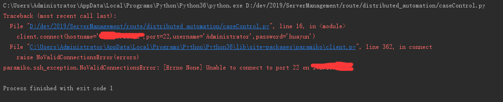
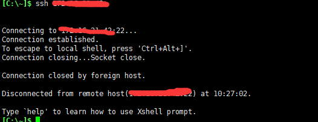
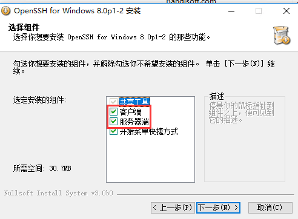

背景：工作中遇到了一个问题，需要用到windows向windows连接（文件传发）以及，linux向windows连接（文件传发）的需求。
自然而然会考虑到用paramiko，然而paramiko我用的比较多的还是连接linux的操作，至于连接windows的操作没用过。在网上搜索一段时间后，发现网上的教程基本上没有。折腾一段时间后发现了winrm，winrm在命令发送比较简单，但是文件上传、下载，还是没有合适的路子（或者说适合自己的方法）。一番折腾后还是想自己研究一把paramiko。
问题1：在网上搜索方法的时候，发现别人可以直接用paramiko连接windows，并用psutil 获取cpu、内存等数据，代码和我们连接linux基本一样的，那么我也来试一下：
import paramiko
client=paramiko.SSHClient()
client.set_missing_host_key_policy(paramiko.AutoAddPolicy())
client.connect(hostname='***',port=22,username='Administrator',password='***')
client.close()
思考1：也可能是因为windows不支持ssh连接，那么我就试一下transaport：
scp=paramiko.Transport((IP,22))
scp.connect(username=username,password=password)
sftp=paramiko.SFTPClient.from_transport(scp)
scp.close()依然遇到了同样的问题
思考2：既然别人可以，代码应该就没有问题，那么会是什么问题。网上搜索一番，发现可能和openssh有关系，接着下载openssh
问题2：按照下面的教程在目标window10 的机器上面安装了openssh之后，再次尝试了一把，但是还是遇到了“[WinError 10061] 由于目标计算机积极拒绝，无法连接。”
https://www.jianshu.com/p/6e5bc39d386e
思考3：会不会因为是22 端口没有开启导致的，于是乎查看端口情况发现端口是开的
思考4：会不会是因为防火墙的原因，关闭防火墙之后发现还是同样的问题，此时的心态已经接近崩溃
问题3：即使我们目标端的windows的机器安装了openssh但是我们还是不能连接上去：

思考5：继续尝试后发现我的目标windows的机器可以通过ssh连接到其他的机器上面，但是我却不能ssh到目标机器上面，这时候似乎明白了什么。查看服务发现ssh启动的只有sshd服务，此时我们把ssh的服务端和客户端都打开应该问题就解决了
ps：其实正在发现问题所在是我在用exe版安装openssh的时候发现了下面的选项，exe版安装是默认按照客户端和服务器端的，而我们源码安装应该只有客户端。
